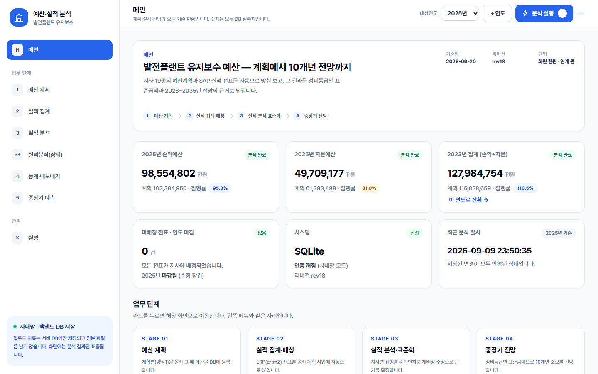
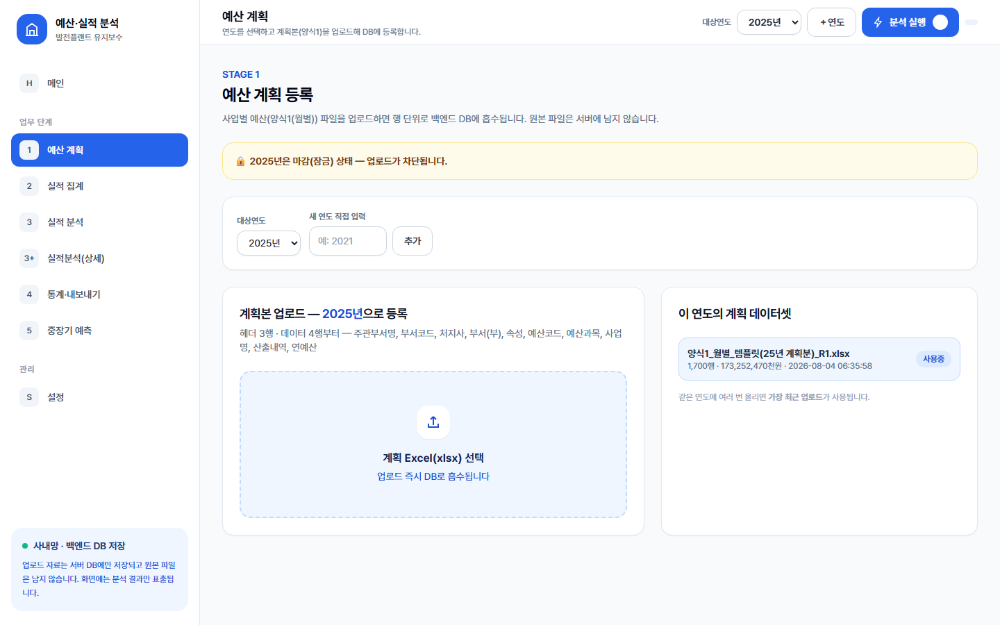
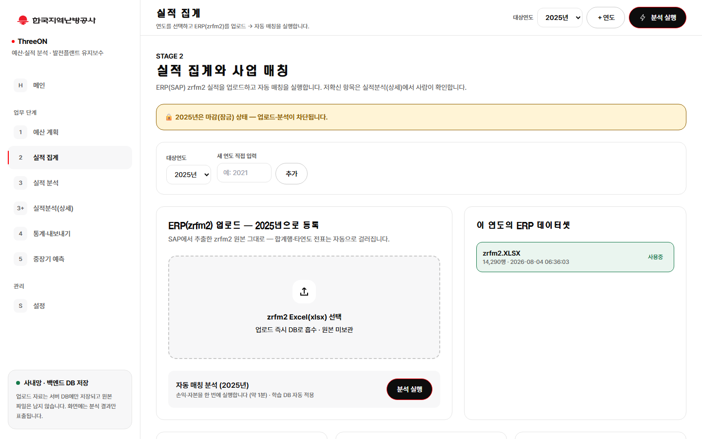
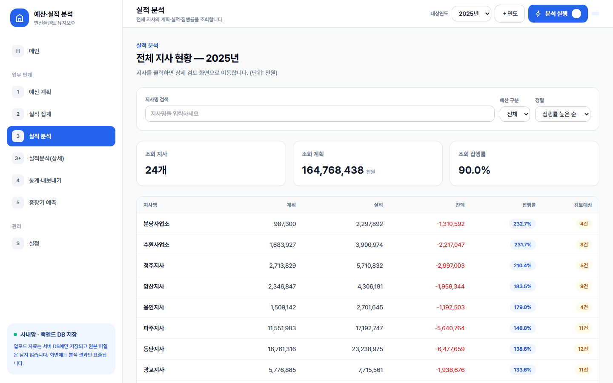
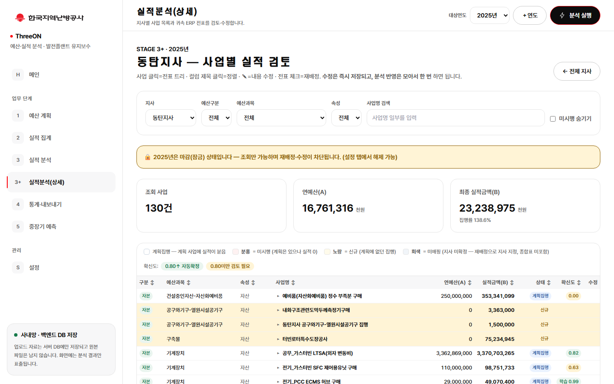
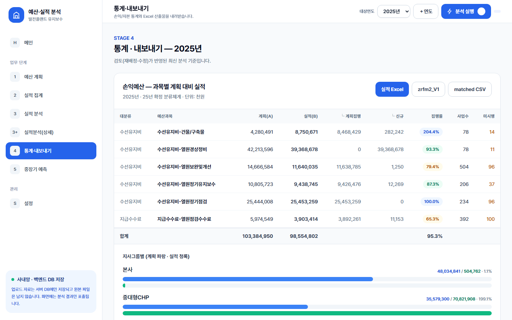
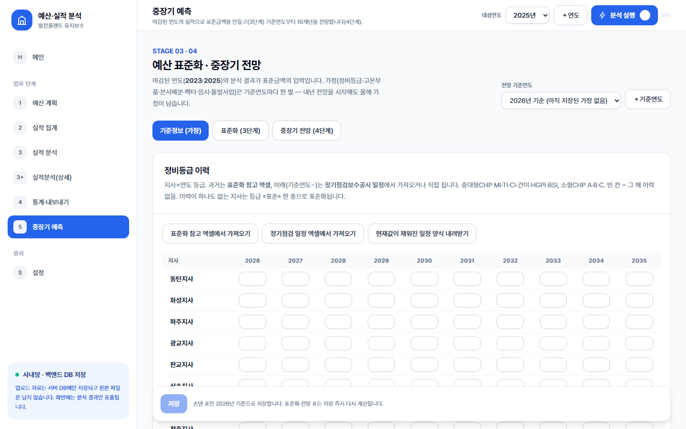
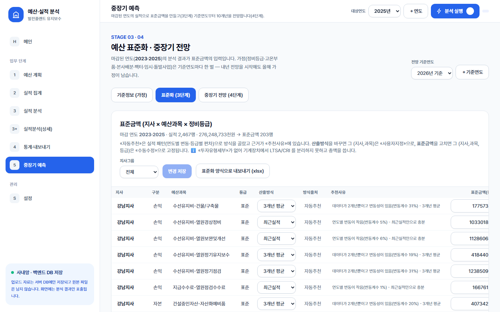
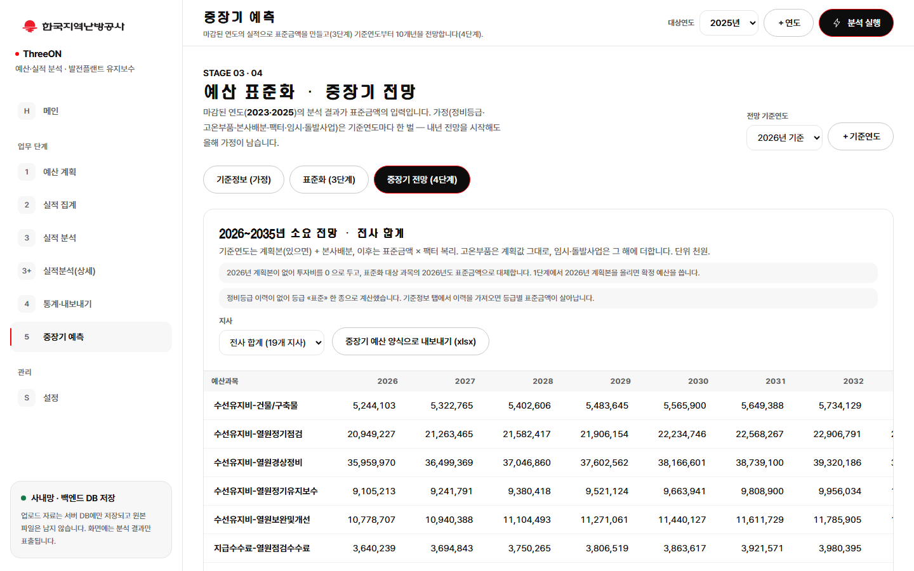
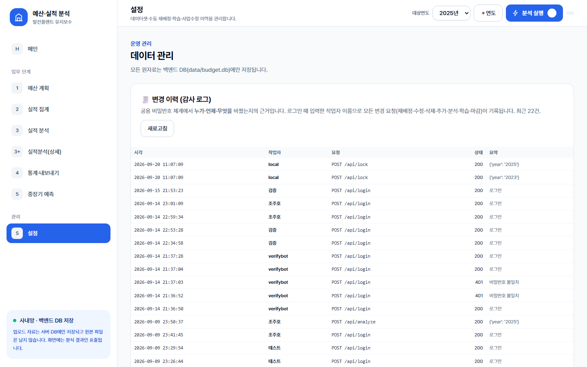

SECTION 01무엇을 하는 시스템인가
① 예산 계획→② 실적 집계·사업 매칭→③ 검토·확정·마감→④ 예산 표준화→⑤ 중장기 전망 26~35
계획본(양식1)과 ERP 전표(zrfm2)를 올리면 전표 하나하나를 계획 사업에 자동으로 귀속시키고(총액 유실 0), 사람이 검토·확정한 결과를 학습해 다음 해에 더 잘 맞춥니다. 확정된 연도를 마감하면 그 실적이 그대로 3·4단계(표준화·중장기 전망)의 입력이 됩니다 — 파일을 옮기거나 다른 프로그램을 열 필요가 없습니다.
2026-09-20 까지의 변화: 동료가 만든 별도 전망 앱(v2)을 이 앱의 5번 탭으로 흡수했고, 서버는 프로세스 하나(uvicorn)로 정리됐으며, 인터넷이 없는 사내 서버에 올리는 절차까지 준비됐습니다.
2026-09-21 (Phase 8): 화면의 색·글꼴·형태를 한국지역난방공사 공식 CI(전용색 KDHC Red, 시그니처 로고, 제목용 한난체)로 바꿨습니다. 왼쪽에 우리 팀 이름 ThreeON이 붙었습니다. 메뉴·순서·기능은 그대로이니 «화면이 낯설다»고 느껴도 하던 대로 쓰면 됩니다. 예전 화면이 보이면 Ctrl+Shift+R 한 번.
SECTION 02접속과 로그인
- https://threeon-budget.onrender.com 을 엽니다. 무료 호스팅이라 15분간 아무도 안 쓰면 잠듭니다 — 첫 접속은 30~60초 걸릴 수 있습니다. 회의 전에 한 번 열어 깨워 두세요.
- 로그인 화면에 작업자 이름(실명 또는 팀 내 고정 별명)과 팀 공용 비밀번호(관리자에게 비밀 메모로 받음)를 넣습니다. 이름은 모든 변경 이력에 기록됩니다.
- 왼쪽 메뉴가 곧 업무 순서입니다. 화면마다 주소가 있어(
/#/branches,/#/detail/동탄지사,/#/forecast/table…) 링크로 공유하면 상대도 같은 화면을 봅니다.
비밀번호·주소를 메신저 일반 채팅이나 이메일 본문에 적지 마세요. 저장소는 공개 상태이므로 저장소 링크가 아니라 이 문서와 배포 주소만 공유합니다.
SECTION 03화면별 사용법
메인 — 오늘 기준 현황과 다음 할 일

1 예산 계획 — 계획본 등록

2 실적 집계 — zrfm2 업로드와 자동 매칭

3 실적 분석 — 전체 지사 현황

3+ 실적분석(상세) — 사람이 검토·확정하는 곳

4 통계·내보내기 — 재무팀 산출물

5 중장기 예측 — 기준정보(가정) · 표준화(3단계) · 중장기 전망(4단계)



설정 — 변경 이력 · AI 학습 · 연도 마감 · 연도별 기준정보 · 모델

SECTION 04한 해를 돌리는 순서
- 설정 → 연도별 기준정보: 새 연도의 지사·과목 구성 확인(전년 복사).
- 1 예산 계획: 사업별예산 업로드 → 계획본 내려받기.
- 2 실적 집계: 계획본 + zrfm2 업로드 → 분석 실행.
- 3+ 상세: 재배정·수정·삭제·추가 → 분석 반영. 메인의 «다음 할 일»이 미배정·미반영을 알려 줍니다.
- 설정: AI 학습 → 검토가 끝나면 연도 마감(수정 잠금 + 산출물 증빙 보관). 마감된 연도만 5번 탭의 입력이 됩니다.
- 4 통계·내보내기: 재무팀 실적본·재검토본.
- 5 중장기 예측: 기준연도 선택 → 기준정보 입력 → 표준화 확인 → 전망 → 양식 5종 내보내기.
분석 후 첫 다운로드는 20~30초(산출물은 그때 생성). 두 번째부터는 즉시. 5번 탭 입력값은 전부 DB 에 있어 배포·재시작에도 남습니다.
SECTION 05어디까지 검증됐나
269 passed자동 테스트 (계산·API·배포 구성·문서)
2023 · 2025실데이터 전 과정 검증 — 미매핑 0, 종합표 = ERP 전체
−0.06%2023 손익, 수기 분석본 대비
10,888건확정 매칭 학습 데이터
| 항목 | 근거 |
|---|---|
| 총액 보존 불변식 | 실적본 종합표 총액 + 미반영 + 타예산 = zrfm2 이번 예산 전체(유실 0). 회귀 테스트의 기준. |
| 3·4단계 계산 동일성 | 동료 v2 앱의 테스트 33개를 그대로 옮겨 같은 결과임을 증명. 2023 역산 기준선 고정. |
| DB 이전 | SQLite ↔ PostgreSQL 금액열 8종 차이 0(원 단위). 운영은 Supabase PostgreSQL. |
| 배포 | Render 컨테이너 1개(uvicorn). 보안 헤더·자산 캐시·gzip 을 앱이 직접 냄 — 배포 응답에서 실측. |
| 사내 반입 스크립트 | Docker 대역 시뮬레이션으로 bash·PowerShell 전 구간 + 부정 경로 5건 통과. 실제 Docker 실행은 사내 PC 에서 1회 남음. |
SECTION 06알려진 한계 — 숫자를 읽을 때 꼭 알아야 할 것
| 한계 | 의미 | 계획 |
|---|---|---|
| 표본 2개년 | 표준금액이 마감 연도 2개(2023·2025)로만 산출됩니다. «변동계수»는 두 값의 비율에 가깝고, 표본이 얇은 칸을 지사그룹·전사 값으로 대체하는 계층적 후퇴는 아직 없습니다. | 동료 합의 후 별도 단계(대외 수치가 바뀜) |
| 정비등급 이력 비어 있음 | 등급 이력을 넣기 전까지 모든 지사가 «표준» 등급 하나로 계산됩니다. 등급별 표준금액은 이력을 가져오면 살아납니다. | 5번 탭 기준정보에서 양식 업로드 |
| 팩터 없는 순진 예측의 오차 | 한 해로 다른 해를 예측하면 2023→2025 실제 증가(+15.9%)를 못 따라갑니다 — 물가·물량 팩터가 4단계에서 채워야 할 몫입니다. | 팩터 입력·재추정(실적 3~4개년 축적 후) |
| 건설공사 3과목 | zrfm2 에 실적 계정이 없어 실적 산출물에서 제외(계획에는 유지). 전망에서 0 으로 나오는 이유입니다. | 별도 실적 소스 확보 시 |
| 무료 호스팅 | 15분 유휴 후 잠듦(첫 접속 30~60초). 데이터는 외부 DB(Supabase)에 있어 사라지지 않습니다. | 사내 서버 이관으로 소멸 |
| 공용 비밀번호 | 개인 계정이 아니라 팀 비밀번호 1개 + 작업자 이름. 이름은 자기 신고라 감사 로그의 근거는 «신뢰»입니다. | 사내 이관 시 인증 정책과 함께 |
SECTION 07남은 일과 담당
| 항목 | 담당 | 비고 |
|---|---|---|
| Supabase 계정 2단계 인증 | 관리자 | DB 자체 접근 권한 — 가장 중요 |
| 저장소 공개 상태 정리(실데이터 파일·private 전환) | 관리자 | 보류 중. 그때까지 저장소 링크는 공유하지 않음 |
| Docker 있는 PC 에서 사내 반입 스크립트 1회 실행 | 관리자 | 결과를 사내이관_가이드 §9 에 기록 |
| 표준금액 계층적 후퇴(표본 2개년 한계) | 동료 합의 → 개발 | 대외 수치가 바뀌므로 합의 먼저 |
| 정비등급 이력·정기점검 일정 입력 | 담당 팀원 | 5번 탭 기준정보 양식 |
| 사내 서버 이관(데이터 이전 · 개인 계정) | 일정 확정 후 | 절차·스크립트 준비 완료 |
SECTION 08문서 지도 (저장소 docs/)
| 문서 | 언제 보나 |
|---|---|
| 팀원_실행가이드.md | 손에 쥐고 쓰는 순서 · 자주 묻는 것 · 각자 PC 실행 |
| HANDOFF.md | 개발자 진입점 — 현재 상태·결정 기록·코드 지도·운영 지식·남은 것 |
| 통합_인수인계_MASTER.md | 분석 로직·DB·API·주의사항 참조서 (상단 현행화 블록부터) |
| 연계계약_CONTRACT.md | 앱이 받고 내는 파일의 스키마·단위·명명 규칙 |
| 배포가이드.md · 사내이관_가이드.md · 보안설계.md | 운영·이관·보안 |
| 학습데이터_모델_관리.md · DB_스냅샷.md | 분류 모델·학습데이터 · DB 스키마와 현재 데이터 |
| UI_제작메모_한난.md | 화면 디자인 — 색·글꼴의 CI 근거, 대비표, 값 바꿀 때 보는 곳 |
| 변경이력_CHANGELOG.md · superpowers/(설계·계획) | 왜 이렇게 만들었나 — 의사결정 이력 |